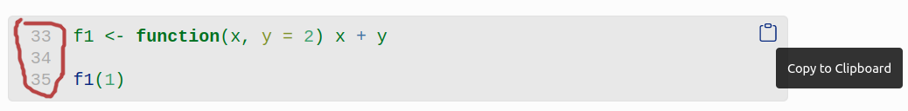

avanzados en R
Este curso pretende profundizar en los elementos de programación computacional, manipulación de bases de datos, diseño experimental, graficación personalizada, y el uso de técnicas y modelaje estadístico avanzadas utilizando R como plataforma. El curso está dirigido a estudiantes avanzados de carrera, de licenciatura o postgrado. En el curso se pretende cubrir las bases de los principales análisis y técnicas de modelaje estadístico, así como análisis emergentes. Todas las semanas se realizarán prácticas de laboratorio en donde se aplicarán los conceptos desarrollados durante las clases de teoría. Además, durante el curso cada estudiante presentará un paquete o extensión (conjunto de herramientas aplicables a análisis específicos) de R, en donde profundizará sobre sus aplicaciones en el campo de la biología demostrando en clase en que consiste el análisis.
Objetivos
- Familiarizar al estudiante con la programación en R
- Brindar herramientas para la manipulación de bases de datos
- Emplear métodos de visualización de datos
- Cubrir algunos de los análisis estadísticos tradicionales
- Proveer a los estudiantes con experiencia en la aplicación de las herramientas brindadas por medio de prácticas y proyectos de investigación
Dinámica de las clases
- Pueden hacer preguntas en cualquier momento
- Sientanse libres de responder preguntas de compañeros
- Traten siempre de correr el código y de tratar de entender todos sus elementos
- Las líneas de código estan numeradas. Podemos usar esos números para referirnos a códigos específicos en los manuales. Los bloques de código también incluyen un botón que permite copiar el código:
- También usaremos el enlace “Compartir código” en el menú principal del este sitio (arriba) para pasar códigos que se desarrollen en clase
Consejos para garantizar el máximo aprovechamiento del curso
- Aseguráte de tener todo lo que necesitas antes del comienzo de la clase
- Tratá de estar preparado unos minutos antes del comienzo de la clase
- Intenta concentrarte al máximo en el curso, cierra otros programas o pestañas innecesarias del navegador de internet (por ejemplo, instagram, twitter, etc)
- Comentá el código